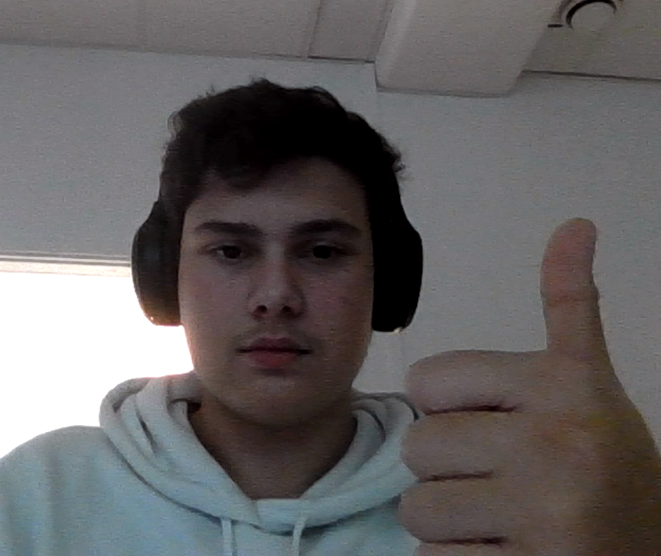

Drone Help
Välkommen till Drone Help!
Välkommen till Drone Help! Den här webbsidan kommer hjälpa dig med allt om drönare. Drönare är väldigt kul att flyga och dem ger dig en känsla av att du själv flyger. Drönare används dessutom i många olika jobb och även utanför jobb så är att flyga drönare en kul hobby att ha.

Varför lyssna på mig?
Det finns så många olika drönare som man kan välja från nu förtiden. Dem flesta kan vem som helst flyga och kräver ingen erfarenhet. Men vad om du vill ha en drönare som är mer specefik för dig och din stil? Här går jag igenom allt du behöver veta om drönare. Jag har väldigt mycket erfarenhet med alla typer av svårighets nivåer och alla typer av drönare generellt. Jag har jobbat mig igenom dem nivåerna som kommer vara presenterade i denna guiden och kan därför med hög säkerhet hjälpa folk komma igång med drönare.

Hur vet du vad som är bäst för dig?
Drönare kommer i alla typer och det kan vara svårt att veta vad som är just för dig. Det finns dock några saker du kan tänka på när du väljer drönare för dig. Det första är såklart hur snabb drönaren är. Det är viktigt att tänka på farten av en drönare eftersom ju snabbare en drönare är desto mer svårhanterad är den.

För ytterligare frågor drönare, kontakta mig på neo.babic@elev.ga.ntig.se